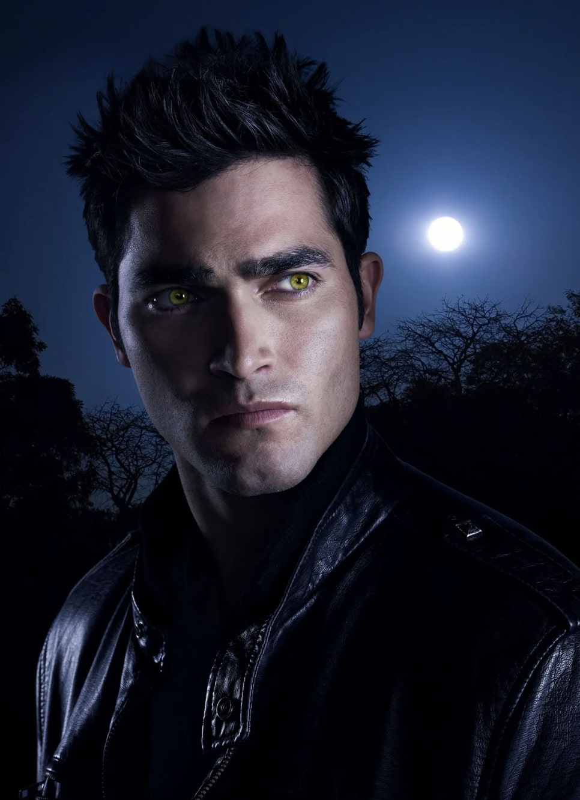

This is the page for Project 2. Fun with Filters and Frequencies!
Back to PortfolioThis project has a lot of differnt subproblems. Mainly touch on the concepts of frequency filtering, pyramid, image blending, etc.
Gradient magnitude computation is obtained by applying finite difference kernels. Two kernels, D_x and D_y, are applied to the image to obtain the partial derivatives in x and y directions.
D_x = [1, -1] and D_y = [1; -1] are used for the finite difference kernels. There are different types of kernels, possibly convolved with averaging like a Sobel operator.
Below is the partial derivative of 'cameraman' image in x and y directions, obtained by applying finite difference kernels.
From left to right, the first image is the partial derivative in x direction, the second image is the partial derivative in y direction, the third image is the gradient magnitude, and the last image is the binary gradient image.
For the binary graident image, several thresholds were tested to find the most suitable one. The value of my choice is 70 (where the pixel scale is 0-255).
Now, the partial derivative is obtained after applying DoG filter. Application of DoG filter results in a much smoother gradient image, a thicker edge, and edges robust to noise.
Especially, speckles that I observed on the bottom side in the previous section are effectively removed.

We can combine the two-step process, the Gaussian filter followed by the finite difference kernel, into a single step by convolving two kernels (equvialently, multiplication in frequency domain).
The image of DoG filters (left: with D_x, right: with D_y) is shown below as a heatmap. I used a 21 x 21 kernel with sigma=1.0.
As expected, applying this single kernal to the cameraman image results in the almost identical gradient images.
Image sharpening is a technique to enhance edges of an image. The sharpened image is obtained by adding the Laplacian of the image to the original image.
The Laplacian of an image is obtained by applying a Laplacian filter to the image. I have introduced a parameter alpha to control the amount of sharpening.
Below are the provided image of Taj Mahal, with Gaussian filter size = 11 x 11, and sigma = 1.0. The first is an original image, the second is a high frequency component, the third and fourth are sharpened images with alpha = 0.4 and 0.8.
In the sharpened version, edges and detailed patterns of the building is much more visible.

Below is the image of my choices! I had tuned alpha = 0.5, 1.0, 1.5 for this case. We can observe that the edges of buildings and the sky (cloud) are getting sharper as alpha increases.
Below is an image of a cat, which is already sharp enough. The first is an original image, the second is a blurred one, the third is a re-sharpened image.
The re-sharpened image is not as sharp as the original image. This is because the high frequency information is already lost during the Gaussian filtering. Even if image sharpening is performed, we cannot recover the lost high frequency information.
Hybrid images are created by combining the low frequency component of one image with the high frequency component of another image. The low frequency one is obtained by a Gaussian filter, and the high frequency one is obtained by a Laplacian filter.
First, this is the hybrid image of Derek (low frequency) and nutmeg (high frequency). I have used color to enhance to effect. The color is only used for the high frequency component. I used sigma = 15 for the cutoff frequency of low pass filter, and sigma = 10 for the high pass filter.
The reason is that low frequency components are spread out over the image (as it corresponds to bulk), while high frequency components are localized (as it corresponds to edges). To make high frequency more visible, it should be colored while the low frequency is just grayscaled.


This is an image of an actor (low frequency) and an werewolf (high frequency). Cutoff frequencies are sigma = 15 for low pass filter and sigma = 7.5 for high pass filter.
(Favorite choice) This is an image of a k-pop idol Newjeans Hani (low frequency) and Minji (high frequency). used the same cutoff frequencies as in the Derek and nutmeg case.
Also, for this favorite choice, these are the frquency domain plots. From left to right, they are Fourier transform of Hani, Hani (Gaussian filtered), Minji, and Minji (Laplacian filtered).
For Hani, by comparing FFT of original and Gaussian filtered, we can see that high frequencies are removed so that the distribution of amplitude is narrowed and more concentrated on the center.
For Minji, by comparing FFT of original and Laplacian filtered, we can see that low frequencies are removed so that the distribution of amplitude is broadened.
(Faliure case) This is an image of a lion (low frequency) and a tiger (high frequency). I tweaked the cutoff frequencies around the Derek and nutmeg case, but the result is not as effective.
I think the reason is because the posture of the lion and tiger are not aligned. The lion's legs are left to the head, while the tiger's body is right to the head. Alignment affects perceptual grouping (as mentioned in the paper)..
The Gaussian stack is created by applying a Gaussian filter to the image multiple times. The sigma of Gaussian filter is increased by a factor of 2 as the stack goes up.
The Laplacian stack is created by subtracting the Gaussian stack from the image, while the topmost level of the stack is same as the one from Gaussian stack.
We also obtain that Gaussian stack for the mask (linear mask for Oraple case), as we are blending two images at each frequency level and the optimal interpolation intermediate region is determined by the frequency level we are working on.
I used a rectangular mask in which mask values at the intermediate region is linearly interpolated.
Below is the Laplacian stack of the orange image (unmasked), from level 0 to 5 Levels combined image is identical to the original image.
Below is the Laplacian stack of the orange image (masked), from level 0 to 5.
Below is the Laplacian stack of the apple image (unmasked), from level 0 to 5.
Below is the Laplacian stack of the apple image (masked), from level 0 to 5.

Below is the Laplacian stack of the combined apple and orange image, from level 0 to 5.
Finally, the combined image (Oraple!) looks like this:
Here I present two additional instances of multiresolution blending, one with the rectangular mask (the one I used in Oraple) and the other with an irregular mask.
The first one is the blending of the apple and orange image. The second one is the blending of the apple and orange image with an irregular mask.
From left to right, the day image of New York City, the night image of New York City, the shape of mask (actually level 0 of Lapalcian stack), and the blended image.
The transition from day to night is smooth, and the lights of the city are gradually turned on!
From left to right, the image of ballerina, firework, the shape of mask, and the blended image.
Without multiresolution blending, the ballerina is awkwardly placed on the firework with a sharp edge. Now, the ballerina is smoothly blended with the firework!